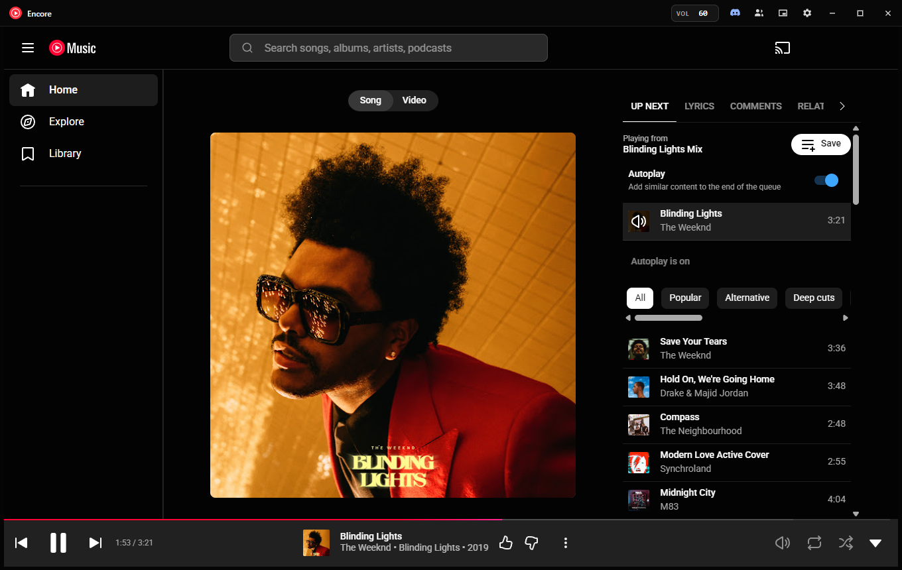
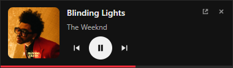

YouTube Music,
better together.
Encore is a free, tiny Windows app for YouTube Music. Listen in sync with friends and show what you play on Discord.

Listen together
Same song, same second. When the host skips, pauses or jumps ahead, everyone follows.
Listen along with friends
Share a code or link and friends with Encore join in one click. Their player follows yours: song, position, pauses and skips.
Join from Discord
Your Discord status shows what you're playing with a Listen along button. Friends press it to hear the same thing, in sync. Friends without the app get a Get Encore button.
Private by design
No accounts. Sync messages are end-to-end encrypted with a key that only exists in your session code, so the relay never sees what you play, and nothing is sent until a friend actually joins.
Everything else you'd want
It's the official YouTube Music website with your own account, so your library, mixes and Premium all work as usual. Encore adds the desktop features around it.
- Mini playerA small always-on-top window with artwork and controls.
- Controls everywhereMedia keys, the Windows media flyout, taskbar buttons (⏮ ⏯ ⏭) and the tray menu with the current song.
- Discord statusSong, artist, artwork and a live timer, with Listen along and Get Encore buttons for your friends.
- A volume that stays putYour level is remembered between launches, and the number in the title bar changes with a scroll.
- Automatic updatesDownloaded in the background and installed when you quit, after a check against their SHA-512 fingerprint.
- Starts your wayOpens where you left it, and starts with Windows or minimizes to the tray if you want.

Small and light
Most desktop apps for YouTube Music bundle their own copy of Chrome. Encore uses the WebView2 engine already built into Windows, so the download is about 4 MB.
Questions
Anything else? Ask on GitHub.
Windows says “Windows protected your PC”. Is it safe?
Windows shows that warning for new apps that aren't code-signed yet; we've applied for free signing for open-source projects. Select More info → Run anyway. Every release is built by GitHub Actions straight from the public source code, so you can see exactly what you're running.
Is this an official YouTube app?
No. Encore is an independent, open-source project, not affiliated with or endorsed by Google or YouTube. It shows the official music.youtube.com website. It doesn't download music or block ads, so artists are paid as usual.
Do I need YouTube Music Premium?
No. Encore works with free and Premium YouTube Music accounts.
Do my friends need Encore too?
Yes, to listen along they join from their own Encore. If they don't have it yet, the Get Encore button on your Discord status brings them here.
What does it send, and to whom?
No accounts and no analytics. Your YouTube sign-in stays on your PC. The app only talks to the services you use: YouTube Music, GitHub (update checks), and, if you use them, Discord and the encrypted listen-along relay. See the privacy details.
Mac or Linux?
Not yet. Encore is built for Windows 10 and 11.
How do I uninstall it?
Settings → Apps → Installed apps → Encore for YouTube Music → Uninstall. Your settings and sign-in stay in %USERPROFILE%\.youtube-music; delete that folder to remove them too.
Bring your friends
Free, open source, about 4 MB · Latest release